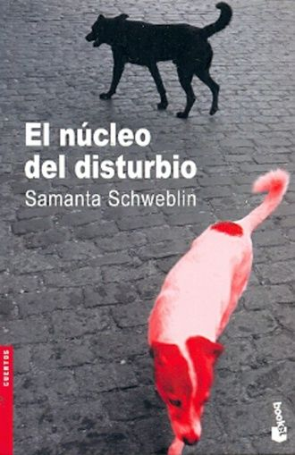
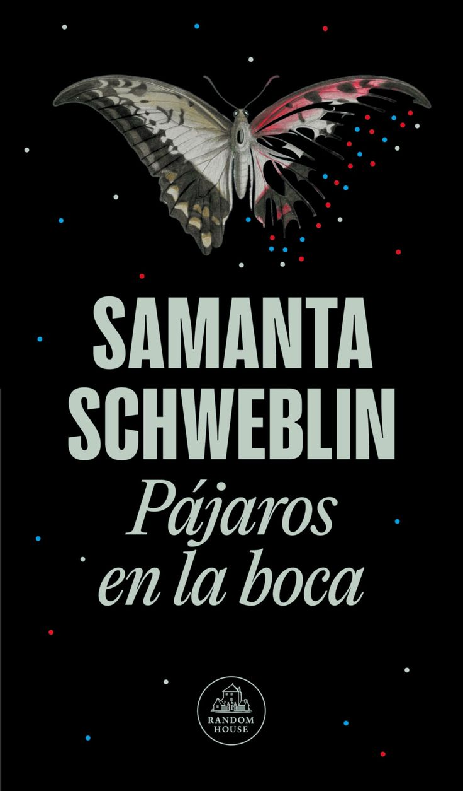
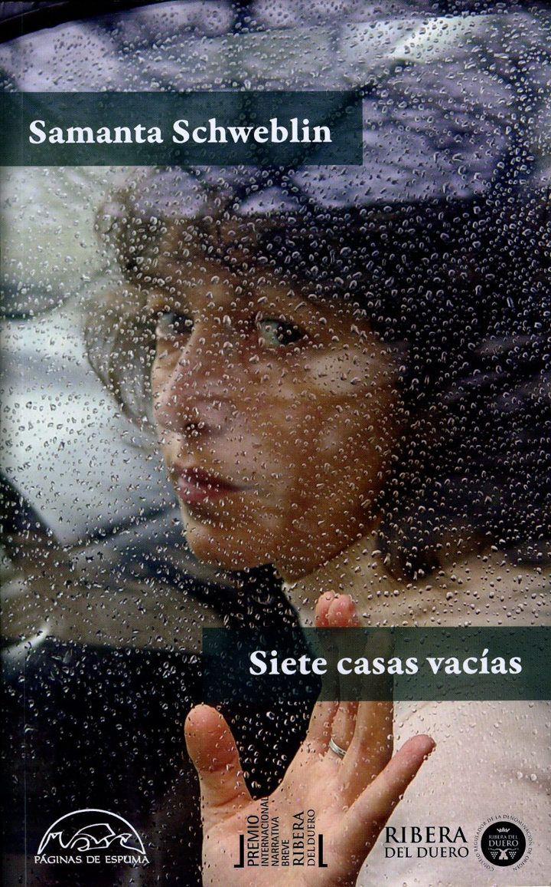
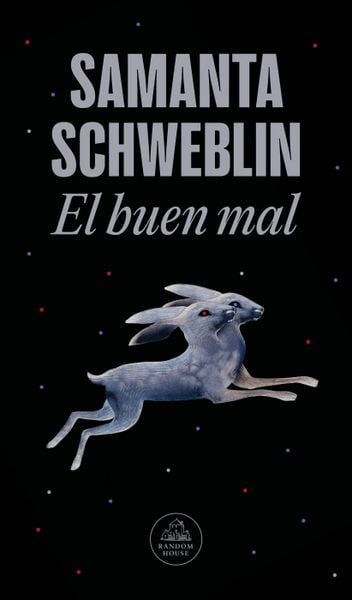
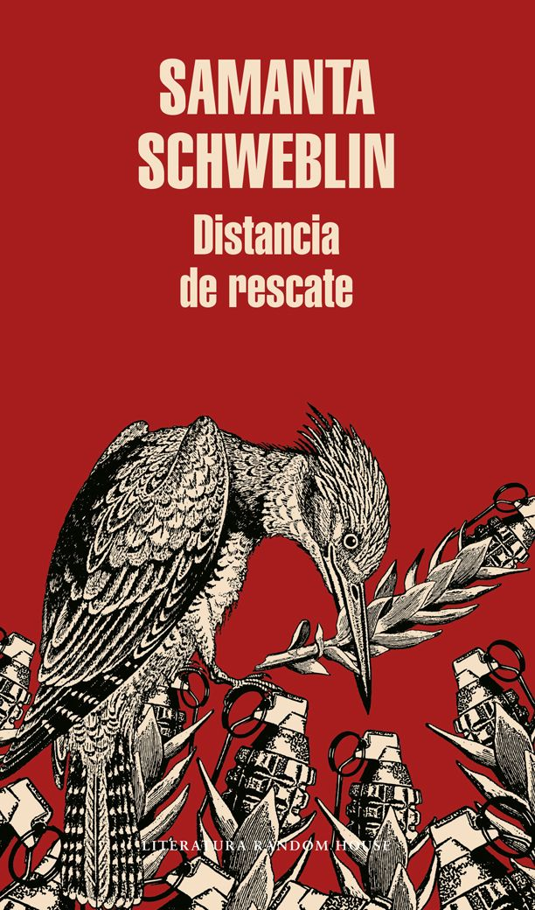
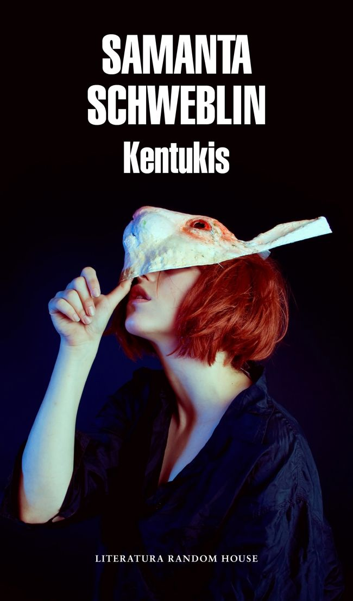

"Creo que el mundo de lo real, y todo lo que etiquetamos como “normalidad” en nuestra vida, no es más que una convención social, un pacto con los otros que nos permite movernos dentro de ciertas reglas."
— Samanta Schweblin
La autora: Samanta Schweblin
Nació en Buenos Aires en 1978. Estudió Diseño de Imagen y Sonido (UBA) y reside en Berlín. Es una de las referentes fundamentales de la narrativa contemporánea en español y del gótico/extraño latinoamericano.
Obra: Cuentos

El núcleo del disturbio
(2002)
Pájaros en la boca
(2009)
Siete casas vacías
(2015)
El buen mal
(2025)Obra: Novelas

Distancia de rescate
(2014)
Kentukis
(2018)Reconocimientos y Cine
Premios Destacados
- National Book Award (2022) — Siete casas vacías
- Premio Ribera del Duero (2015) — Siete casas vacías
- Premio Casa de las Américas (2008) — Pájaros en la boca
- Premios Konex (2014, 2024) — Trayectoria en Cuento
Adaptaciones Audiovisuales
- Distancia de rescate: Largometraje para Netflix (2021) dir. Claudia Llosa.
- Nada de todo esto: Cortometraje (2023) en la Sección Oficial del Festival de Cannes.
- La pesada valija de Benavides: Película de suspenso (2016).
"Bajo tierra" (Pájaros en la boca, 2009)
El contexto
Obra clave que la posicionó internacionalmente, enfocada en quiebres sutiles e inquietantes de la realidad.